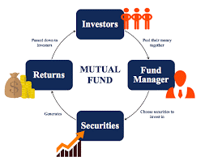

- Financial goals or purpose of investing. These include buying a house, marriage, retirement planning, etc.
- Risk tolerance. While every investor would want to earn the highest returns on investment, it is important to assess the risk that you are comfortable taking.
- Investment horizon. Knowing your investment horizon will come automatically to you once you know what your goals are. For e.g.: if buying a house is a goal, you would know when do you need it and when do you want to make your first payment towards it.
Mutual Funds
What Is Mutual Fund?
Mutual Funds are a kind of financial product wherein the money invested by different investors is pooled together. These funds are then invested in various securities like stocks, Bonds, money market instruments and other assets.
 Different Types Of Mutual Funds You Can Invest In:- Equity funds:
- These are funds that invest your money in stocks of different companies. Equity funds, as expected, carry a higher degree of risk.
- Debt funds:
- Debt funds are mutual funds that invest in fixed income securities like bonds, government securities, and treasury bills, among others. They carry lower risk.
- Hybrid funds:
- Hybrid funds invest in a mix of two or more asset classes – most often, stocks and bonds. The risk is more evenly distributed in these types of mutual funds.
- Balanced funds:
- Like hybrid funds, balanced mutual funds also invest in multiple asset classes – often stocks, bonds and money market instruments.
Although mutual funds are managed by professional managers, however, not all funds perform equally well. There are many funds who are not even able to beat the index. That’s why its really important for you to select right mutual funds that will fulfill your investment goals.
Understand Your Investor Profile
Performance across market cycles
If you are investing for the long-term, then your money will go through several market cycles. To meet your goals, it is important to ensure that the fund will survive these cycles. Again, predicting the future is impossible. However, you can look at the performance of the fund during difficult market periods in the past and assess how the fund manager has ensured performance.
Expense Ratio
While generating returns on investments is challenging enough, every mutual fund scheme charges some amount as fund management costs that can corrode the returns. This is charged in the form of an expense ratio. This can be an important aspect while finding the right scheme.
Monitor Your Portfolio Regularly
Since a portfolio offers a bird’s eye view of all your investments, it allows you to monitor and manage them with ease. While stocks require more frequent monitoring, you must ensure that you check the performance of your mutual fund investments regularly too. If you find that some investments are underperforming, then you can redeem and replace them with more promising funds.
Advantages Of Mutual Funds Over Direct Equity- Diversification
- The advantage of mutual funds is that diversification is automatically done. Instead of buying investments on your own, you outsource the task to an expert.
- Professional Management
- The advantage of mutual funds is that they are managed by professional experts. Thus, to ensure your money is invested in the right place, you have to choose the MF carefully
- Ease of Use
- In mutual funds, the research and data collection is done by the funds themselves. All you have to do is analyze the performance
- Liquidity
- One advantage of mutual funds that is often overlooked is liquidity. In financial jargon, liquidity basically refers to the ability to convert your assets to cash with relative ease.
- Cost
- Mutual funds are relatively cheaper and deduct only 1% to 2% of the expense ratio. Debt mutual funds usually deduct even lesser.
- Tax Efficiency
- Mutual funds are relatively more tax-efficient than other types of investments. Long-term capital gain tax on equity mutual fund is zero